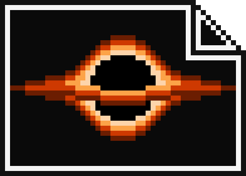
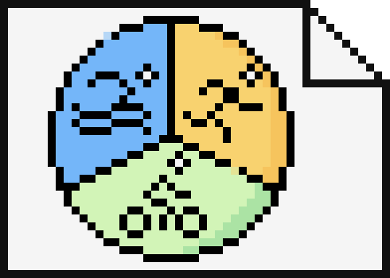
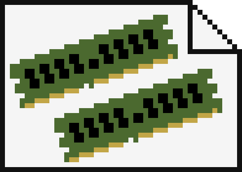
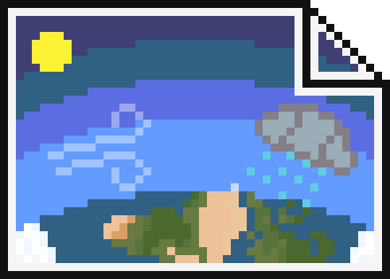
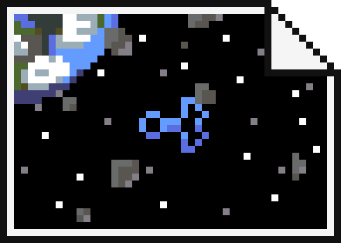
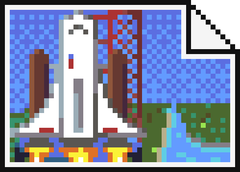
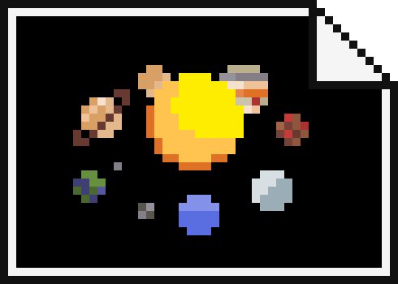

PROJECTS
The following are some projects i've worked on, enhancing a variation of my skills.

Successfully creating a black hole renderer in C++ using OpenGL and GLFW, I was able to
simulate the visual effects of a black hole on light. This involved creating a 3D scene with a black hole at the center,
and a star field in the background. The black hole was represented by a sphere with a custom ray-tracing algorithm that
warped the light around it, creating the illusion of a black hole. This project was a great way to challenge myself and
learn more about the complexities of light and how it interacts with objects in space.

In a group of 6, using a hybrid of the python framework flask and html, we created
a fully functional gym booking system, including the ability to create and edit accounts, using a mySQL database,
purchase memberships and bookings up to 2 weeks in advance through the stripe API, ask questions to our own
AI chatbot helper powered by chatGPT, as well as managing the website and users of it through an admin account.
In under 6 weeks we had made a fully functional and responsive website. The use of devops and various meetings was
instrumental to this project, as we alternated roles to make sure that everyone got a chance to work on every part
of the system.

Using Microsoft Azure, I created a distributed sensor network in JavaScript of 20 virtual
sensors. This required creating an Azure Function App that contained 2 functions. Function one randomly generated sensor data,
and then appended this data to an Azure SQL database. These entries would be time stamped and all data older than 2 days
would be deleted. Function 2, would track this database and trigger every time an update was detected. It processed the
data and calculated maximums, minimums and averages for all 20 sensors, and stored these to a seperate database.

In the C language, I designed, developed, and tested to completion a fully functional
debugger for the JACK programming language. This required the 3 following programs: The Lexical analyzer (Lexer) which parsed every individual word, symbol,
or other type into a linked list with enough metadata to identify each element. The Semantic analyzer
(Parser), which used a recursive descent parser to ensure that all of the 'words' from the lexer were in the correct
order. Finally, the semantic analyzer, using a symbol table implemented as a tree, to ensure that all
variables and functions are declared and called correctly. This project required a high attention to detail and
extensive knowledge of JACK language design and its syntax. It reinforced in me the importance of debugging and
testing, while teaching me a new way of problem-solving.

Utilizing XV6, a small and simple Unix-based OS, I skillfully implemented a
custom system call for memory allocation within the OS. This dynamic memory allocation mechanism
allowed programs to efficiently use memory as needed and freed resources when they were no longer
required. As a result, numerous applications within the OS were able to have improved space efficiency,
optimizing their performance.

Using React and JavaScript, I coded the frontend and backend for a Weather lookup app.
Through the combined use of the University of Helsinki country API and the Open Weather API, I created a simple
application, where the user could search for a country through typing parts of the name, and once selected, the
app would display miscellaneous data about the country, as well as up to date information on the weather of the
capital city of the selected country.

In C++, using GLFW, I created a basic 2d asteroid game where the user could
pilot a ship around a sea of asteroids in space. This included the implementation of many graphical techniques, for
example, line drawing using bresenhams algorithm, image blitting, handling line rotations and line clipping / culling.
Using C, I created a program capable of reading, writing and manipulating greyscale PGM image
files. This included scaling up and down images, splitting images into smaller sub-images, and putting them back together
again, and also, comverting PGM binary image formats into PGM denary format, and back. Additionally, This project had a
large focus on automated testing and error handling, using shell scripts to automate testing.
I developed a fullstack app using React for the frontend, JavaScript for the backend,
MongoDB for the database, and FlyCTL to temporarily deploy the app to the web. Users could add entries to the
phonebook, consiting of a name and phone number, and they could also search for other entries by name. Through
an admin page, entries could be removed from the database.

Using OpenGL and GLFW in C++, I created a custom interactive 3D renderer in a team of 3.
This involved manually handling matrix / vector functions for displaying the 3D scene to the 2D monitor and to handle
rotations for the objects, loading wavefront OBJ files and displaying them, adding textures to 3D objects, handling
simple object instancing, creating a custom spaceship model, adding local light sources and handling appropriate shading,
basic animations for the rocket ship as well as adding particle effects for the ship's movement. Furthermore, as a team,
we also had to implement camera movement, and tracking cameras for the space ship's animation, as well as a split screen
feature.

Using a python library called VPython, I challenged myself to make an accurate 3D simulation
of our solar system, using real world statistics to fuel the mathematics behind the animation. Despite being
an outdated library, I chose this library for its simplicity and how easy it was to implement in python. As well as
its resonably extensive documentation. This project allowed me to express my interests visually, while deepening my
understanding of how simulations can be made.
Using Python, the requests library, and the BeautifulSoup library, I created a web scraper that could scrape
and dynamically gather info from an entire web server. Data could then be retrieved through the creation of an inverted index, as well as
scoring different pages to provide a user with effective multi-term search results. This project was a great way to learn about web scraping
and how to handle the data that is scraped. I also learned about the importance of respecting the website's robots.txt
file, and how to handle errors when scraping.